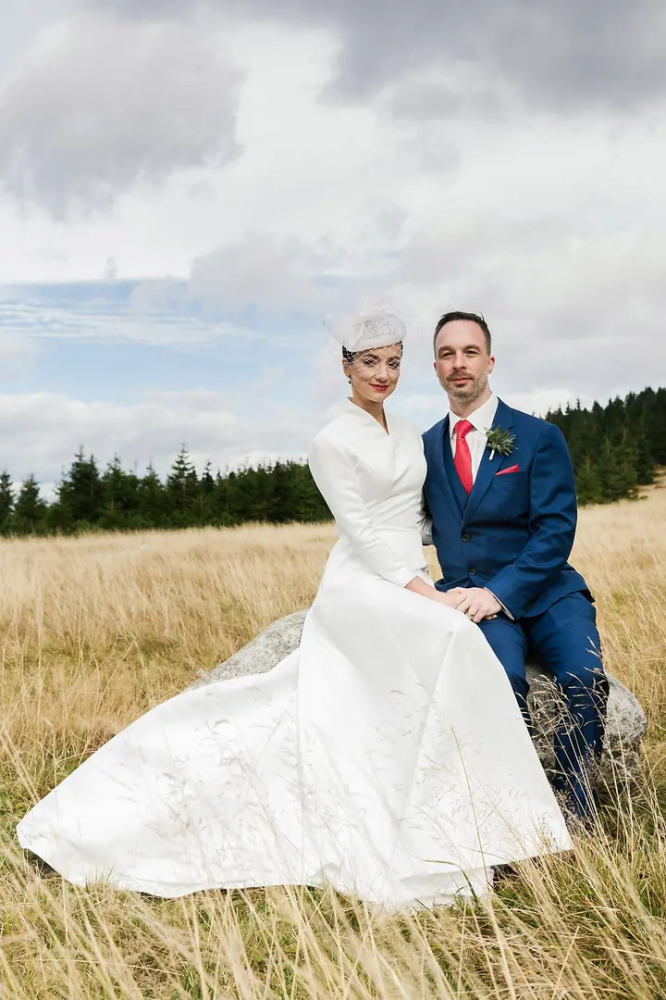

jedna
Svatební fotografie
Od zachycení obřadu až po celodenní fotografování. Rád se pohybuji mezi usměvavými nevěstami a veselými ženichy a za vámi přicestuji kamkoli.

Svatební a portrétní fotograf · Praha 8 a okolí, Kopřivnice, kamkoli po domluvě

Jmenuji se Petr Holuša, pocházím z Kopřivnice a fotím hlavně svatby a portréty. Za vámi rád přicestuji kamkoli, abychom spolu vytvořili fotografie, ke kterým se budete rádi vracet i po letech.
Více o mně
Co fotím
jedna
Od zachycení obřadu až po celodenní fotografování. Rád se pohybuji mezi usměvavými nevěstami a veselými ženichy a za vámi přicestuji kamkoli.
dvě
Uvolněné focení pro vás, pro pár nebo pro celou rodinu. Chci, aby pro vás focení bylo zábavným zážitkem.
tři
Profesionální portréty pro web, LinkedIn nebo firemní prezentaci. I u byznys portrétů si vždycky užijeme spoustu zábavy.
Fotím v prostředí plném lásky a štěstí


Za objektivem
Jmenuji se Petr Holuša a fotografii se věnuji už řadu let. Postupem času jsem se zaměřil hlavně na svatby a portréty, protože mě tyhle oblasti baví nejvíc. Je příjemné pohybovat se v prostředí plném lásky a štěstí, mezi usměvavými nevěstami a veselými ženichy.
Stejně tak si užijeme spoustu zábavy při focení headshotů a byznys portrétů, o neformálním focení ani nemluvě. Pro mě je při práci opravdu důležité, aby focení bylo zajímavým a zábavným zážitkem.
Věřím v jedinečnost a chci, abyste se tak i cítili. Pocházím z Kopřivnice, dnes mě najdete v Praze, ale rád za vámi přijedu kamkoli. Tak pustíme se do toho společně?
Petr
Ozvěte se přes formulář, e-mailem nebo telefonem. Zeptejte se klidně na cokoli, co vás zajímá.
Probereme termín, místo a co od focení čekáte. U svatby se domluvíme, jestli budu fotit jen obřad, nebo celý den.
Focení beru jako zábavný zážitek. Nemusíte umět pózovat, stačí být sami sebou.
Fotografie pečlivě vyberu a upravím a pošlu vám je, abyste se k nim mohli vracet i po letech.
Portfolio
Fotografie jsou ilustrační
Otázky
Ne. Bydlím v Praze, pocházím z Kopřivnice a rád za vámi přicestuji kamkoli.
Obojí. Nabízím cokoli od zachycení samotného obřadu až po celodenní fotografování.
Byznys portréty a headshoty, ale i neformální a rodinné focení.
Vůbec ne. Hodně mi záleží na tom, aby focení bylo zábavným zážitkem, takže se uvolníte dřív, než čekáte.

Napište pár vět o tom, co si představujete. · +420 604 327 678